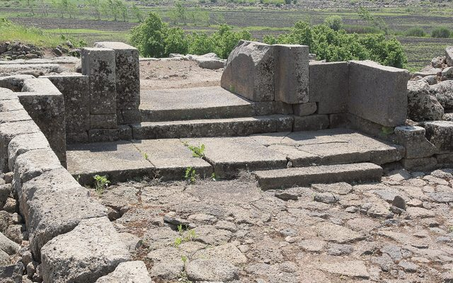

Inicio › Qué ver, provincia por provincia › Gaziantep
La guía Kültür Varlıkları reúne 14 lugares en Gaziantep: 7 yacimiento arqueológico, 5 museo, 2 castillo y edificio histórico. A continuación encontrará lo más destacado, un mapa y la lista completa.
⭐ Lo más destacado

1 · Gaziantep · MuseoMuseo de los Mosaicos de Zeugma
El Museo de los Mosaicos de Zeugma es uno de los mayores museos de mosaicos del mundo y expone obras extraordinarias de la antigua Zeugma, a orillas del Éufrates.

2 · Gaziantep · MuseoMuseo Arqueológico de Gaziantep
El Museo Arqueológico de Gaziantep presenta miles de años de historia de Gaziantep y su entorno, zona de transición entre Mesopotamia y Anatolia.

3 · Gaziantep · MuseoMuseo Panorama de la Defensa de Gaziantep
Dentro del castillo de Gaziantep, este museo narra la defensa de la ciudad en 1920–1921.
🗺 En el mapa
📍 Todos los lugares (14)
Yacimiento arqueológico (7)
 Ciudad antigua de KarkemishYacimiento arqueológico
Ciudad antigua de KarkemishYacimiento arqueológico Yacimiento de RumkaleYacimiento arqueológico
Yacimiento de RumkaleYacimiento arqueológico
Tilmen HöyükYacimiento arqueológico Yacimiento de YesemekYacimiento arqueológico
Yacimiento de YesemekYacimiento arqueológico Yacimiento de ZeugmaYacimiento arqueológico
Yacimiento de ZeugmaYacimiento arqueológico Zincirli Höyük (Sam'al)Yacimiento arqueológicoDülük (Doliche)Yacimiento arqueológico
Zincirli Höyük (Sam'al)Yacimiento arqueológicoDülük (Doliche)Yacimiento arqueológicoMuseo (5)
Museo de los Mosaicos de ZeugmaMuseoMuseo Arqueológico de GaziantepMuseoMuseo Panorama de la Defensa de GaziantepMuseo Museo Etnográfico Hasan SüzerMuseoMuseo de Cocina Emine GöğüşMuseo
Museo Etnográfico Hasan SüzerMuseoMuseo de Cocina Emine GöğüşMuseo